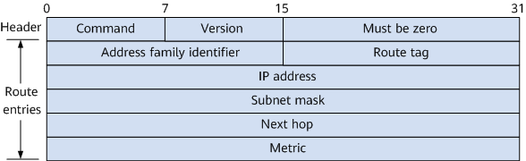

RIP Message Types and Format
RIP Message Types and Sending Modes
RIP messages are encapsulated in UDP packets, and both the source and destination ports of RIP messages are UDP ports. RIP defines two types of packets: Request and Response. Request is used to request a response containing all or part of a router's RIP routing table, while Response is used to send RIP route updates and contains routing information (such as the metric). After RIP is enabled on an interface of a routing device, the interface immediately sends a Request message and begins listening for RIP messages. The interface then periodically sends Response messages.
RIP-1 uses the broadcast address 255.255.255.255 as the destination IP address of RIP messages. The broadcast messages advertised by a RIP-1 routing device are flooded in the broadcast domain in which the RIP routing device resides. As such, all other routing devices in the same broadcast domain receive these broadcast messages and consume resources to process them. RIP-2 uses the multicast address 224.0.0.9 as the destination IP address of RIP messages, and all RIP-2 routing devices listen for this multicast address, reducing the impact on other devices in the broadcast domain.
Upon receipt of a Request message, a RIP routing device replies with a Response message carrying the routing information requested by the peer.
Upon receipt of a Response message, a RIP routing device parses the routing information carried in the Response message. If the routing information is not discovered by itself and the route metric is valid, the RIP routing device learns the route and adds it to its routing table.
RIP-1 Message Format
RIP-1 is a classful routing protocol which supports only the broadcast of RIP messages. Figure 1 illustrates the format of a RIP-1 message. RIP is based on UDP, and a RIP-1 message cannot be longer than 512 bytes. Because RIP-1 messages do not carry any mask information, only the routes of natural network segments (such as Class A, B, and C) can be identified. As a result, RIP-1 does not support route summarization or discontiguous subnets.
The fields in a RIP-1 message are described as follows:
- Command: identifies the type of a RIP message. The value 1 indicates a Request message, and the value 2 indicates a Response message.
- Version: In RIP-1, the value of this field is 1.
- Address family identifier: The value 2 indicates the IP protocol. If the message is a Request used to request the entire routing information from a directly connected routing device, this field is set to 0. In addition, the Request message contains only one routing entry whose destination network address is 0.0.0.0 and metric is 16.
- IP address: specifies the destination network address of a route.
- Metric: indicates the metric of a route.

RIP-1 messages do not carry the destination network mask of a route.
RIP-2 Message Format
RIP-2 is a classless routing protocol. Figure 2 shows the format of a RIP-2 message.

The fields in a RIP-2 message are described as follows:
- Command: identifies the type of a RIP message. The value 1 indicates a Request message, and the value 2 indicates a Response message.
- Version: In RIP-2, the value of this field is 2.
- Address family identifier: similar to that in RIP-1.
- Route tag: used to set tag information for routes which can then be flexibly controlled based on tags in routing policies. For example, when an external route is imported to RIP to form a RIP route, a route tag is configured for the RIP route. The route tag will not be lost when the route is transmitted within the RIP routing domain.
- IP address: specifies the destination network address of a route.
- Subnet mask: used to store the destination network mask of a route. RIP-2 supports Variable Length Subnet Mask (VLSM), route summarization, and Classless Inter-Domain Routing (CIDR).
- Next Hop: This field is defined in RIP-2 to prevent the router from selecting a sub-optimal path on the multi-access network, and enables the optimal next hop address to be selected on the broadcast network.
- Metric: indicates the metric of a route.
- RIP-2 supports multicast of RIP messages. Only routing devices with support for RIP-2 can receive multicast RIP messages, reducing resource consumption.
- RIP-2 supports simple authentication, MD5 authentication, and HMAC-SHA256 authentication for protocol packets. To ensure high security, HMAC-SHA256 authentication is recommended.